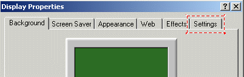
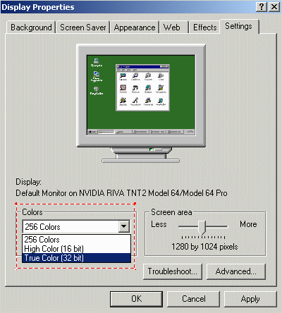
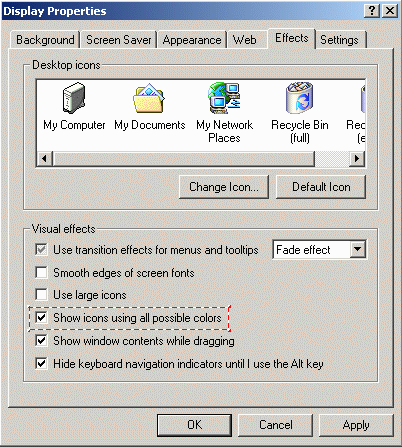
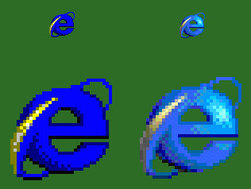

Using More Than 16 Colors
Top
Windows can display icons with more than 16 colors. By default, however, icons are
limited to 16 colors. In order to use more than 16 color icons, such as the 256
color icons, follow these steps.
- You must have your monitor set to thousands of colors or higher (either
16bit or 24bit colors). Right click on your computer desktop and select the
Properties menu item. The Display Properties window will appear.
Click on the Settings tab.

- Select either High Color (16bit) or True Color (32 bit)
under the Colors option. Your system may have different selection options
but just select one with more than 256 colors. Click on the Apply button.

- Now click on the Effects tab.

- Enable the Show icons using all possible colors option and the
click on the OK button.
- Don't forget that an icon can have multiple formats stored within a single file.
The icon you use must have a 256 color member for it to display more than
16 colors. Many of the icons in Icon Library only have 16 color icons and cannot
be used to display 256 colors, although the shareware version does have a sample
collection of 256 color icons under the 256 Color menu. The Internet Explorer
icon was used to demonstrate the difference between 16 and 256 color icons.
-
The icon on the left uses the 16 color member of the Internet Explorer icon,
while the icon on the right uses the 256 color member. The images on the bottom row
are the same icons that have been magnified with a graphics editor program to show
the additional colors in more detail.

- How to Manage an Active Collection of
icons.